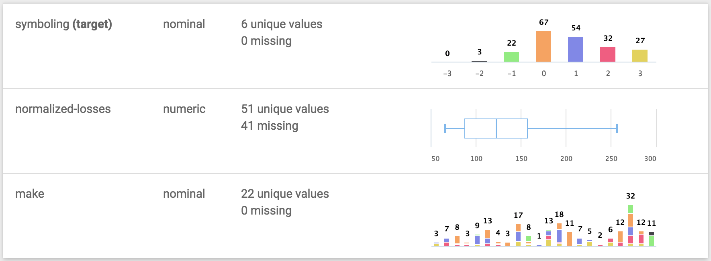
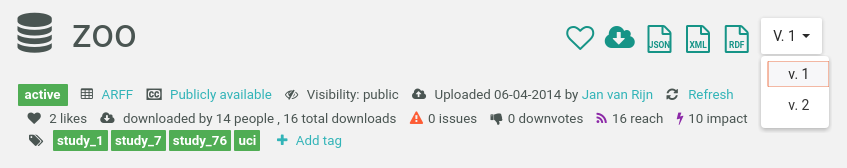
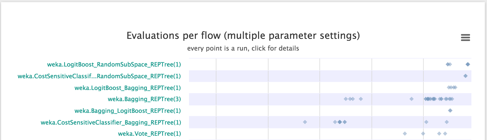
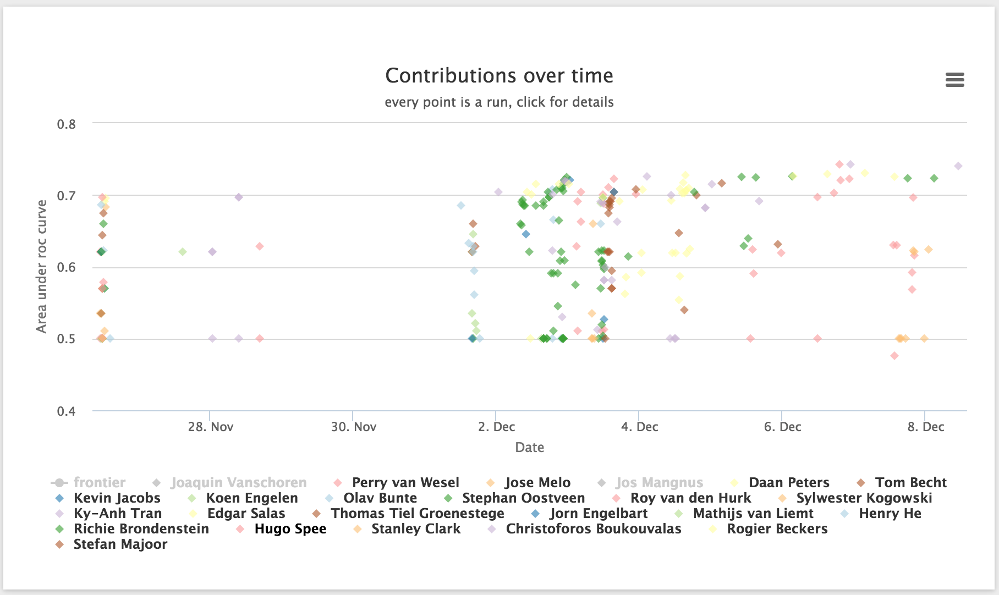
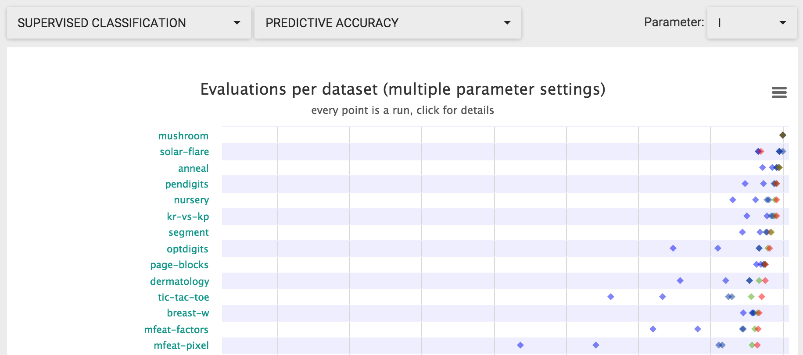
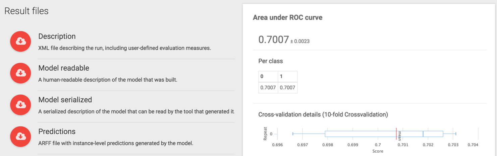
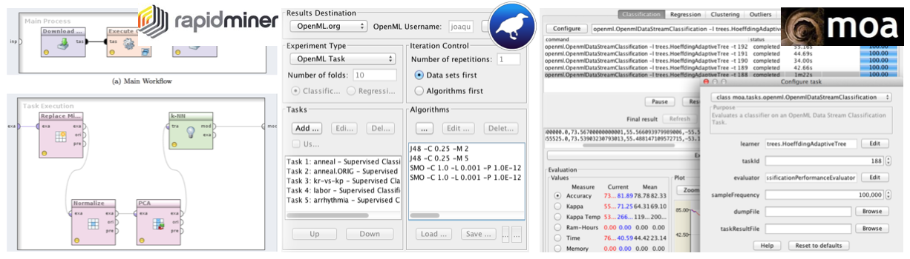
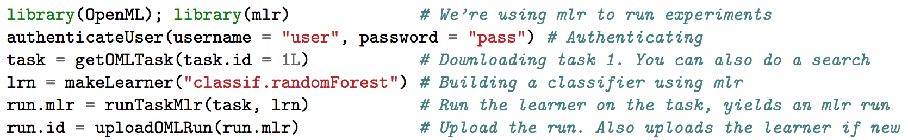

An open, collaborative, frictionless, automated machine learning environment.
Data sets automatically analyzed, annotated, and organized online
Machine learning pipelines automatically shared from many libraries.
Extensive APIs to integrate OpenML into your own tools and scripts
Reproducible results (e.g. models, evaluations) for easy comparison and reuse
Collaborate in real time, right from your existing tools
Make your work more visible, reusable, and easily citable
Open source tools to automate experimentation and model building
Concepts➚
OpenML operates on a number of core concepts which are important to understand:
Datasets
Datasets are pretty straight-forward. They simply consist of a number of rows, also called instances, usually in tabular form.
Example: The iris dataset
Tasks
A task consists of a dataset, together with a machine learning task to perform, such as classification or clustering and an evaluation method. For
supervised tasks, this also specifies the target column in the data.
Example: Classifying different iris species from other attributes and evaluate using 10-fold cross-validation.
Flows
A flow identifies a particular machine learning algorithm from a particular library or framework such as Weka, mlr or scikit-learn.
Example: WEKA's RandomForest
Runs
A run is a particular flow, that is algorithm, with a particular parameter setting, applied to a particular task.
Example: Classifying irises with WEKA's RandomForest
Data➚
You can upload and download datasets through the website, or API. Data hosted elsewhere can be referenced by URL.
Data consists of columns, also known as features or covariates, each of which is either numeric, nominal or a string, and has a unique name. A column can also contain any number of missing values.

Most datasets have a "default target attribute" which denotes the column that is usually the target, also known as dependent variable, in supervised learning tasks. The default target column is denoted by "(target)" in the web interface. Not all datasets have such a column, though, and a supervised task can pick any column as the target (as long as it is of the appropriate type).
Example: The default target variable for the MNIST data is to predict the class from pixel values, OpenML also allows you to create a task that tries to predict the value of pixel257 given all the other pixel values and the class column. As such, the class is also considered a feature in OpenML terminology.
OpenML automatically analyzes the data, checks for problems, visualizes it, and computes data characteristics, also called data qualities (including simple ones like number of features, but also more complex statistics like kurtosis or the AUC of a decision tree of depth 3). These data qualities can be useful to find and compare datasets.
Every dataset gets a dedicated page with all known information (check out zoo), including a wiki, visualizations, statistics, user discussions, and the tasks in which it is used.
Info
OpenML currently only supports uploading of ARFF files. We aim to extend this in the near future, and allow conversions between the main data types.
Dataset ID and versions➚
A dataset can be uniquely identified by its dataset ID, which you can find in the URL of the dataset page, such as 62 for zoo. Each dataset also has a name, but several dataset can have the same name. When several datasets have the same name, they are called "versions" of the same dataset (although that is not necessarily true). The version number is assigned according to the order of upload. Different versions of a dataset can be accessed through the drop down menu at the top right of the dataset page.

Dataset status➚
Each dataset has a status, which can be "active", "deactivated" or "in_preparation". When you upload a dataset, it will be marked "in_preparation" until it is approved by a site administrator. Once it is approved, the dataset will become "active". If a severe issue has been found with a dataset, it can become "deactivated". By default, the search will only display datasets that are "active", but you can access and download datasets with any status.
Ignored features➚
Features in datasets can be tagged as "ignored" or "row id". Those features will not be considered by programming interfaces, and excluded from any tasks.
Tasks➚
Tasks describe what to do with the data. OpenML covers several task types, such as classification and clustering. You can create tasks online.
Tasks are little containers including the data and other information such as train/test splits, and define what needs to be returned.
Tasks are machine-readable so that machine learning environments know what to do, and you can focus on finding the best algorithm. You can run algorithms on your own machine(s) and upload the results. OpenML evaluates and organizes all solutions online.

Tasks are real-time, collaborative data mining challenges (e.g. see this one): you can study, discuss and learn from all submissions (code has to be shared), while OpenML keeps track of who was first.

More concretely, tasks specify the dataset, the kind of machine learning task (i.e. regression), the target attribute (i.e. which column in the dataset should be predicted), the number of splits for cross-validated evaluation and the exact dataset splits, as well as an optional evaluation metric (i.e. mean squared error). Given this specification, a task can be solved using any of the integrated machine learning tools, like Weka, mlr and scikit-learn.
Note
You can also supply hidden test sets for the evaluation of solutions. Novel ways of ranking solutions will be added in the near future.
Flows➚
Flows are algorithms, workflows, or scripts solving tasks. You can upload them through the website, or APIs. Code hosted elsewhere (e.g., GitHub) can be referenced by URL, though typically they are generated automatically by machine learning environments.
Flows contain all the information necessary to apply a particular workflow or algorithm to a new task. Usually a flow is specific to a task-type, i.e. you can not run a classification model on a clustering task.
Every flow gets a dedicated page with all known information (check out WEKA's RandomForest), including a wiki, hyperparameters, evaluations on all tasks, and user discussions.

Note
Each flow specifies requirements and dependencies, and you need to install these locally to execute a flow on a specific task. We aim to add support for VMs so that flows can be easily (re)run in any environment.
Runs➚
Runs are applications of flows to a specific task. They are typically submitted automatically by machine learning environments (through the OpenML APIs), with the goal of creating a reproducible experiment (though exactly reproducing experiments across machines might not be possible because of changes in numeric libraries and operating systems).
OpenML organizes all runs online, linked to the underlying data, flows, parameter settings, people, and other details. OpenML also independently evaluates the results contained in the run given the provided predictions.
You can search and compare everyone's runs online, download all results into your favorite machine learning environment, and relate evaluations to known properties of the data and algorithms.

OpenML stores and analyzes results in fine detail, up to the level of individual instances.
Authentication➚
You can download and inspect all datasets, tasks, flows and runs through the website or the API without creating an account. However, if you want to upload datasets or experiments, you need to create an account or sign in and create an API key. This key can then be used with any of the OpenML APIs.
Integrations➚
OpenML is deeply integrated in several popular machine learning environments. Given a task, these integrations will automatically download the data into the environments, allow you to run any algorithm/flow, and automatically upload all runs.

Programming APIs➚
If you want to integrate OpenML into your own tools, we offer several Language-specific APIs, so you can easily interact with OpenML to list, download and upload datasets, tasks, flows and runs.
With these APIs you can download a task, run an algorithm, and upload the results in just a few lines of code.
OpenML also offers a REST API which allows you to talk to OpenML directly.

Tags➚
Datasets, tasks, runs and flows can be assigned tags, either via the web interface or the API. These tags can be used to search and annotated datasets. For example the tag OpenML100 refers to benchmark machine learning algorithms used as a benchmark suite. Anyone can add or remove tags on any entity.
Studies (under construction)➚
You can combine datasets, flows and runs into studies, to collaborate with others online, or simply keep a log of your work.
Each project gets its own page, which can be linked to publications so that others can find all the details online.
Circles (under construction)➚
You can create circles of trusted researchers in which data can be shared that is not yet ready for publication.
Jobs (under construction)➚
OpenML can help you run large experiments. A job is a small container defining a specific flow, with specific parameters settings, to run on a specific tasks. You can generate batches of these jobs online, and you can run a helper tool on your machines/clouds/clusters that downloads these jobs (including all data), executes them, and uploads the results.